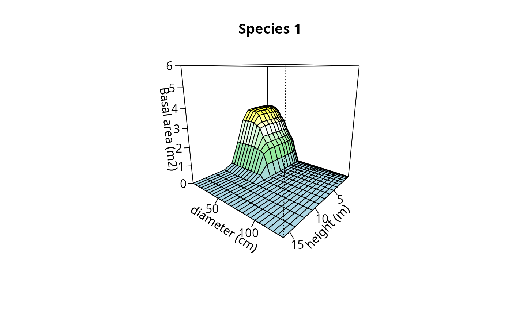

Draws a cummulative abundance surface
plot.CAS.RdCreate plots used to inspect one or more cumulative abundance profiles.
Usage
# S3 method for class 'CAS'
plot(x, plot=NULL, species=NULL, sizes1=NULL, sizes2 = NULL,
palette = colorRampPalette(c( "light blue","light green","white",
"yellow","orange","red")), zlim=NULL,...)Arguments
- x
An object of class
CAS.- plot
A string indicating the plot record whose surface is to be drawn.
- species
A string indicating the species whose profile is to be drawn.
- sizes1
A vector containing the size values associated to each primary size class. If
NULLthe x-axis will be defined using the primary size class order inx.- sizes2
A vector containing the size values associated to each secondary size class. If
NULLthe y-axis will be defined using the secondary size class order inx.- palette
Color palette for z values.
- zlim
The limits for the z-axis.
- ...
Additional plotting parameters for function
persp.
References
De Cáceres, M., Legendre, P. & He, F. (2013) Dissimilarity measurements and the size structure of ecological communities. Methods in Ecology and Evolution 4: 1167-1177.
Examples
## Create synthetic tree data
pl = rep(1,100) # All trees in the same plot
sp = ifelse(runif(100)>0.5,1,2) # Random species identity (species 1 or 2)
h=rgamma(100,10,2) # Heights (m)
d = rpois(100, lambda=h^2) # Diameters (cm)
m = data.frame(plot=pl,species=sp, height=h,diameter=d)
m$ba = pi*(m$diameter/200)^2
print(head(m))
#> plot species height diameter ba
#> 1 1 2 7.252218 42 1.385442e-01
#> 2 1 2 4.919238 18 2.544690e-02
#> 3 1 1 1.479482 1 7.853982e-05
#> 4 1 2 4.264047 17 2.269801e-02
#> 5 1 1 7.549600 52 2.123717e-01
#> 6 1 2 7.166193 67 3.525652e-01
## Size classes
heights = seq(0,4, by=.25)^2 # Quadratic classes
diams = seq(0,130, by=5) # Linear classes
## Stratify tree data
X<-stratifyvegdata(m, sizes1=heights, sizes2=diams,
plotColumn = "plot", speciesColumn = "species",
size1Column = "height", size2Column = "diameter",
abundanceColumn = "ba")
## Build cummulative abundance surface
Y = CAS(X)
## Plot the surface of species '1' in plot '1' using heights and diameters
plot(Y, species=1, sizes1=heights[-1], xlab="height (m)",
ylab="diameter (cm)", sizes2=diams[-1], zlab="Basal area (m2)",
zlim = c(0,6), main="Species 1")
